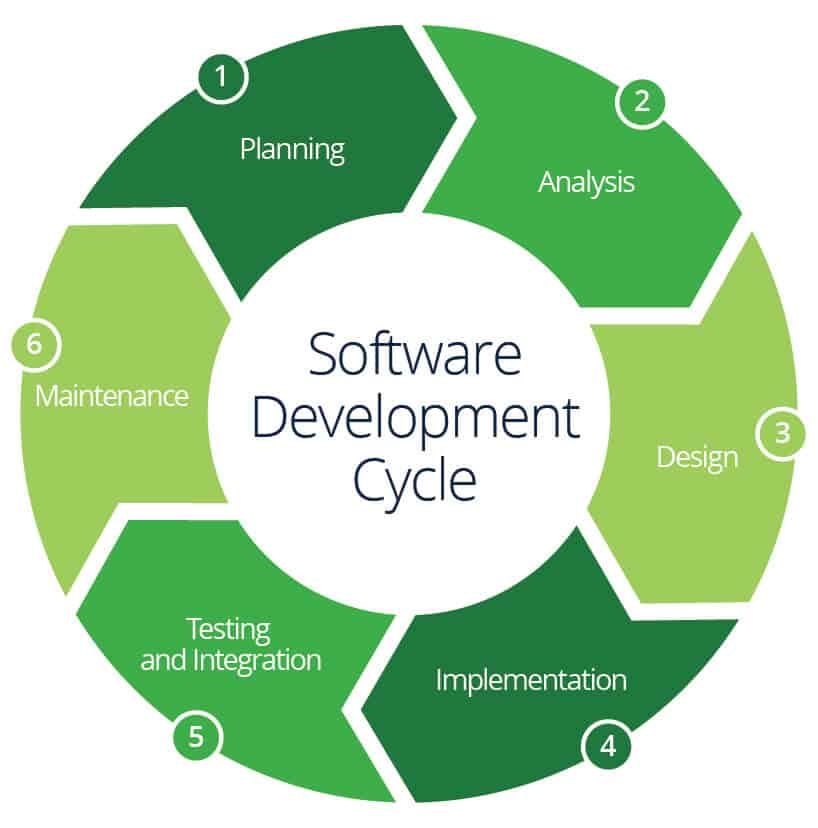
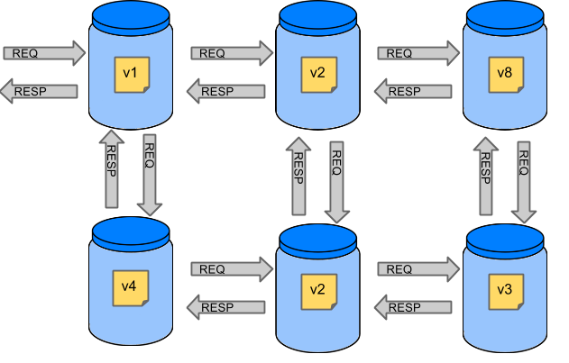

Programación de Aplicaciones Telemáticas
Tema 7: Testing en una aplicación
Agenda
Sessión 1
- Introducción
- Test funcionales
- Test no funcionales
- Piramide de testing
- Tests unitarios
- Consideracion de diseño de Tests
- Librerias
Agenda
Sessión 2
- TDD
- Test End-to-End
Sessión 1
Introdución
¿Por que necesitas tests?
Es necesario verificar que el software cumple con las expectativas / requerimientos.
Test funcionales
Una prueba funcional es una prueba basada en la ejecución, revisión y retroalimentación de las funcionalidades previamente diseñadas para el software.
Test funcionales
- Configuracion del Build System
- Unit Tests
- Integration Tests
- Code Coverage
- Documentación
Test no funcionales
Una prueba no funcional es una prueba que evalua la forma en la que un desarrollo y/o aplicativo opera, haciendo foco en sus atributos y calidad. La calidad depende principalmente del tiempo, la precisión, la estabilidad, la corrección y la durabilidad de un producto en diversas circunstancias adversas.
Test no funcionales
- Performance Testing
- Profiling Testing
- Security Testing
Test no funcionales
Performance Testing
Las pruebas de rendimiento consisten en evaluar el comportamiento de un sistema en términos de capacidad de respuesta y estabilidad con una carga de trabajo determinada.
Test no funcionales
Profiling Testing
En ingeniería de software, el perfilado ("perfilado de programas", "perfilado de software") es una forma de análisis dinámico de programas que mide, por ejemplo, el espacio (memoria) o la complejidad temporal de un programa, el uso de determinadas instrucciones o la frecuencia y duración de las llamadas a funciones.
Test no funcionales
Security Testing
Las pruebas de seguridad son un proceso destinado a revelar fallos en los mecanismos de seguridad de un sistema de información que protegen los datos y mantienen la funcionalidad prevista
Pirámide de Testing
La pirámide de pruebas es una forma de pensar en cómo se deben utilizar los distintos tipos de pruebas automatizadas para crear un portfolio equilibrado.

Pirámide de Testing
- Unit Tests
- Integration Tests
- E2E Tests
Tests unitarios
Las pruebas unitarias aseguran de que una determinada unidad del código base funciona según lo previsto.

Consideracion de diseño de Tests
Principios FIRST
- Fast
- Independent
- Repeatable
- Self-validating
- Timely
Consideracion de diseño de Tests
The Right BICEP
- B – Todas las condiciones de contorno (Boundary) son correctas
- I – Puedes comprobar relaciones inversas (inverse)
- C – Puedes comprobar los resultados (check) con otros medios
- E – Puedes generar condiciones de error (error)
- P – Se pueden validar pruebas de rendimiento (performance)
JUnit
JUnit es un marco de pruebas unitarias para el lenguaje de programación Java. Desempeña un papel crucial en el desarrollo basado en pruebas, y es una familia de marcos de pruebas unitarias conocidos colectivamente como xUnit
JUnit
JUnit promueve la idea de "first testing then coding", que hace hincapié en la creación de los datos de prueba para una pieza de código que puede ser probado primero y luego implementado. Este enfoque es como "prueba un poco, codifica un poco, prueba un poco, codifica un poco".
JUnit
Features
- Proporciona anotaciones para identificar los métodos de ensayo
- Proporciona afirmaciones para comprobar los resultados esperados
- Proporciona ejecutores de pruebas para ejecutar pruebas
JUnit
Features
- Permite codificar más rápido, lo que aumenta la calidad
- Elegantemente sencillo
- Pueden ejecutarse automáticamente y comprueban sus propios resultados y proporcionan información inmediata
- Las pruebas pueden organizarse en conjuntos de pruebas
JUnit
Example
public class MyUnit {
public String concatenate(String one, String two){
return one + two;
}
}
JUnit
Example
public class MyUnitTest {
@Test
public void given_MyUnit_when_concatenate_then_Ok() {
MyUnit myUnit = new MyUnit();
String result = myUnit.concatenate("one", "two");
assertEquals("onetwo", result);
}
}
JUnit
Example 2
Requirements:
Write a program that prints the numbers from 1 to 100.
But for multiples of three print “Fizz” instead of
the number and for the multiples of five print “Buzz”.
For numbers which are multiples
of both three and five print “FizzBuzz”.
JUnit
Example 2
Requirements:
public class FizzBuzzConverter {
public String convert(int toConvertToFizzBuzz) {
if(toConvertToFizzBuzz % 15 == 0) {
return "FizzBuzz";
}
if(toConvertToFizzBuzz % 5 == 0) {
return "Buzz";
}
if(toConvertToFizzBuzz % 3 == 0) {
return "Fizz";
}
return String.valueOf(toConvertToFizzBuzz);
}
}
Referencias
- https://es.wikipedia.org/wiki/Pruebas_de_software
- https://es.wikipedia.org/wiki/Pruebas_funcionales
- https://martinfowler.com/bliki/TestPyramid.html
- https://martinfowler.com/bliki/UnitTest.html
- https://martinfowler.com/testing/
- https://martinfowler.com/articles/practical-test-pyramid.html
- https://xp123.com/articles/3a-arrange-act-assert/
- https://martinfowler.com/bliki/GivenWhenThen.html
- https://martinfowler.com/bliki/TestDouble.html
Referencias
- https://junit.org/junit5/
Referencias
- https://spring.io/guides/gs/testing-web/
Sessión 2
TDD

Test End-to-End
Las pruebas de extremo a extremo (End-to-End) son una técnica que comprueba todo el producto de software de principio a fin para garantizar que el flujo de la aplicación se comporta como se espera.
Test End-to-End
Referencias
- https://martinfowler.com/bliki/IntegrationTest.html
- https://martinfowler.com/articles/mocksArentStubs.html
- https://martinfowler.com/bliki/TestDouble.html
- http://wiremock.org/
- https://www.testcontainers.org/